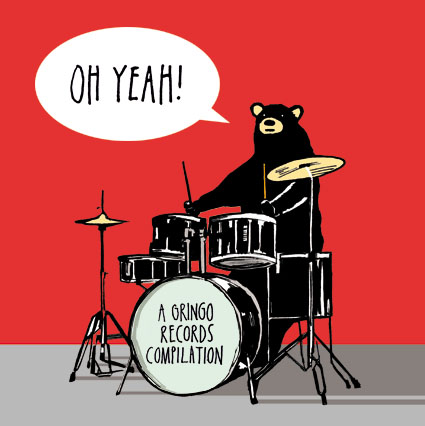

Q & A with Demi:
- Q: Did you have pets, if yes then what pet, if not then why?
A: The only pet I have ever had was a hermit crab named Hercules.
- Q: Who did you what to be when you were little?
A: I wanted to be a famous dancer.
- Q: What is your favorite piece of clothing?
A: My favorite piece of clothing are my shark socks. The mouth goes around my leg and it looks like I’m being eaten by the shark.
- Q: What is your favorite piece of art?
A: I don’t know if I have a favorite piece of art but one of my favorite artists is Moonassi.
- Q: What is your favorite music genre?
A: My favorite kinds of music are indie, jazz and old blues songs.
